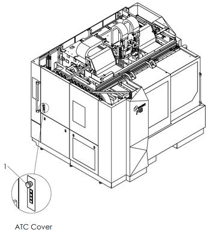
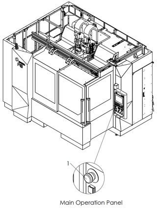
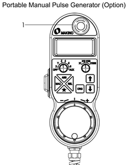
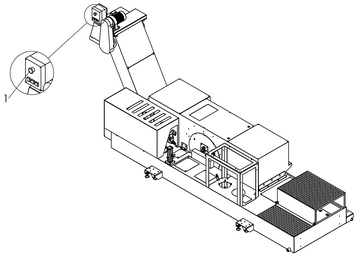

|
<< Click to Display Table of Contents >> Navigation: Chapter 1 Safety > Safety Devices > "Emergency Stop" Switch |
|
|
<< Click to Display Table of Contents >> Navigation: Chapter 1 Safety > Safety Devices > "Emergency Stop" Switch |
|
WARNING |
•Make sure operators know the locations of all the "Emergency Stop" switches prior to performing machine operation or maintenance to enable use in an abnormal or dangerous situation. |
The machine goes to the following status when the "Emergency Stop" switch is pressed:
•Feeding of the axes is stopped immediately.
•Spindle rotation stops if it is rotating.
•The spindle is clamped if it has been unclamped.
•When orientation of the spindle has been performed, orientation is reset.
•When a tool is being changed or the tool magazine is operating, operation stops immediately (even during motion).
•The lift-up chip conveyor and internal chip conveyor come to an immediate stop during operation.
•The hydraulic unit is stopped.
•The cutting fluid supply is stopped.
•The air supply of air blow inside the machining chamber is stopped.
•Energizing of all solenoid valves is reset.
•The NC is reset.
Once the "Emergency Stop" switch is pressed, it is locked in the pressed position. The lock can be released by turning the switch in the direction indicated by the arrow or pulling out the switch. Then, pressing the [CONTROL POWER ON] switch cancels the emergency stop state.
For details on recovery procedures following machine operation stopped by pressing the "Emergency Stop" switch (Refer to Instruction Manual Chapter 8 Troubleshooting 2.1 Recovery from Emergency Stop Status).
"Emergency Stop" switches are installed at the following locations. All buttons function identically.
 

Figure 3.1 "Emergency Stop" Switch
No. |
Name |
1 |
"Emergency Stop" Switch |

Figure 3.2 "Emergency Stop" Switch (Options)
No. |
Name |
1 |
"Emergency Stop" Switch |